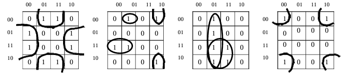
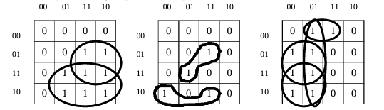
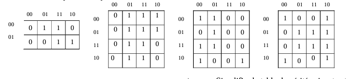

Examples of possible groupings:
Examples of impossible or redundant groupings:
Summary of the method:
- Determine the number of input variables to know the size of the tables.
- Determine the number of output variables to define the number of tables to perform.
- Assign to the different products of the non-simplified equation a case of the table respecting the Gray code.
- Introduce the logical function into the table by positioning a '1' in the cases that validate the function of the output.
- Perform the grouping of adjacent cases.
- Output the simplified function by eliminating the input variables that change state.
IV. Applications
Equation Simplification
F1 = /abc + c/b/a + /bc/a + /c/ab
F2 = ab + /ba
F3 = /d/cba + /dcb/a + /dc/ba + /d/cba
F4 = dca + /bc/a + /ca
c. Simplify the following truth table and provide the logic diagram